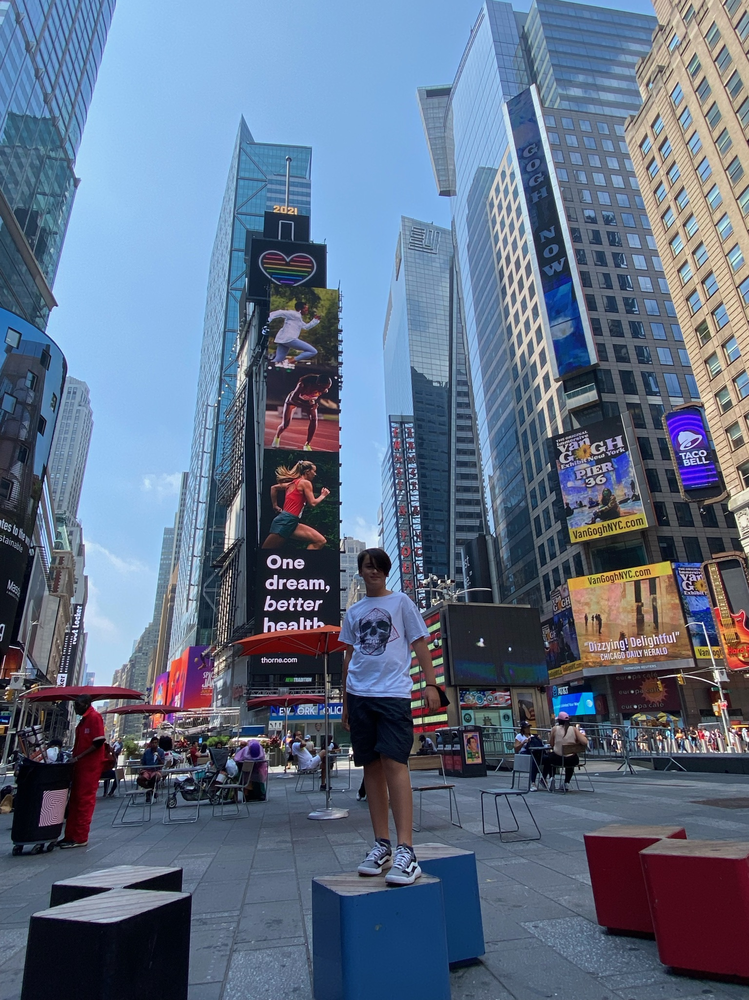

Destinos que tienes que visitar
Cancun
visite este lugar en Enero de 2021
Cancun es un lugar muy turistico hay varias playas,plazas,parques acuaticos.es una ciudad de México ubicada en la península de Yucatán que limita con el mar Caribe y que es conocida por sus playas, los numerosos centros turísticos y la vida nocturna. Se compone de 2 áreas distintas: el área del centro más tradicional y la Zona Hotelera, la franja costera con hoteles altos, clubes nocturnos, tiendas y restaurantes. Cancún también es un destino popular entre estudiantes durante el período de vacaciones universitarias en la primavera.
new york
visite este lugar en Julio de 2021
new york es una ciudad muy desarrollada y turistica tiene un teatro un parque y una estacion de trenes .Nueva York incluye 5 distritos que se ubican donde el río Hudson desemboca en el océano Atlántico. En su centro se encuentra Manhattan, un distrito densamente poblado que se encuentra entre los principales centros comerciales, financieros y culturales del mundo. Sus sitios icónicos incluyen rascacielos, como el Empire State Building, y el amplio Central Park. El teatro Broadway se ubica en la zona del Times Square iluminada con neones.
RESEÑAS DE PELICULAS

exelente manera de concluir la saga
Vi la película hoy con mis hijos y les encantó. Eso sí, debes de tener al menos un conocimiento básico de lo que pasó en las películas anteriores o no entenderás el 40 % de la película. Antes de ver Endgame, tienes que ver Infinity War, Civil War, Black Panther, Age of Ultron, Ant-Man and the Wasp. Esta película es un homenaje a todos los filmes de superhéroes de Marvel. Te encantará. Al inicio de la película (aquí viene un pequeño spoiler) hay una decapitación muy impresionante. Esta es la película de ciencia ficción más hablada y popular. En la película, podrás ver cómo los Vengadores se unen una vez más para revertir los acontecimientos que causó Thanos y regresar el balance al universo. Esta película es muy larga, dura alrededor de 3 horas.

exelente final a la trilogia de spiderman
Tras descubrirse la identidad secreta de Peter Parker como Spider-Man, la vida del joven se vuelve una locura. Peter decide pedirle ayuda al Doctor Extraño para recuperar su vida. Pero algo sale mal y provoca una fractura en el multiverso..
lista de libros
